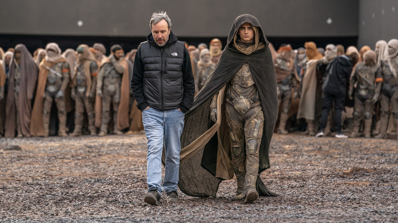

Dune 2: El regreso a Arrakis
Una épica secuela que expande el universo de Dune con nuevos desafíos y personajes inolvidables.
Leer másEntretenimiento — Lo más reciente sobre cine y series
Una épica secuela que expande el universo de Dune con nuevos desafíos y personajes inolvidables.
Leer másLa segunda temporada de Sandman profundiza en el universo onírico con nuevos personajes y giros sorprendentes.
Leer másUn repaso por los mejores momentos de la serie que redefinió la comedia en la televisión.
Leer más